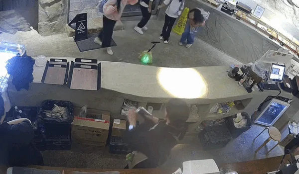

"비싸서 못 사 먹는데 선물로"…크루아상 가게 앞 초등생들 큰절 : 네이트 뉴스

부산의 한 카페 관계자 A 씨는 "CCTV 올리는 거 별로 좋아하지 않는데 너무 귀여워서"라며 당시 상황을 소개했다.
A 씨에 따르면 카페를 찾은 초등학생들은 돈이 부족해 먹고 싶었던 빵을 포기해야 했다.
이를 본 A 씨는 아이들에게 크루아상을 서비스로 건넸다.
빵을 선물로 받은 아이들은 이를 받아 들고 위층으로 올라갔다.
이후 빵을 맛있게 먹은 아이들은 다시 카운터로 내려왔다.
공개된 영상에선 아이들 4명이 카운터 앞에 나란히 줄을 서서 직원에게 허리를 90도로 숙여 인사하는 모습이 담겼다.
이어 아이들은 일제히 바닥에 엎드려 큰절까지 올렸다.
큰절을 받은 카페 직원들 역시 웃으며 매장을 떠나는 아이들을 끝까지 배웅한 것으로 전해졌다.
호의를 감사로 답할 줄 아는, 어리지만 큰 친구들

커여워